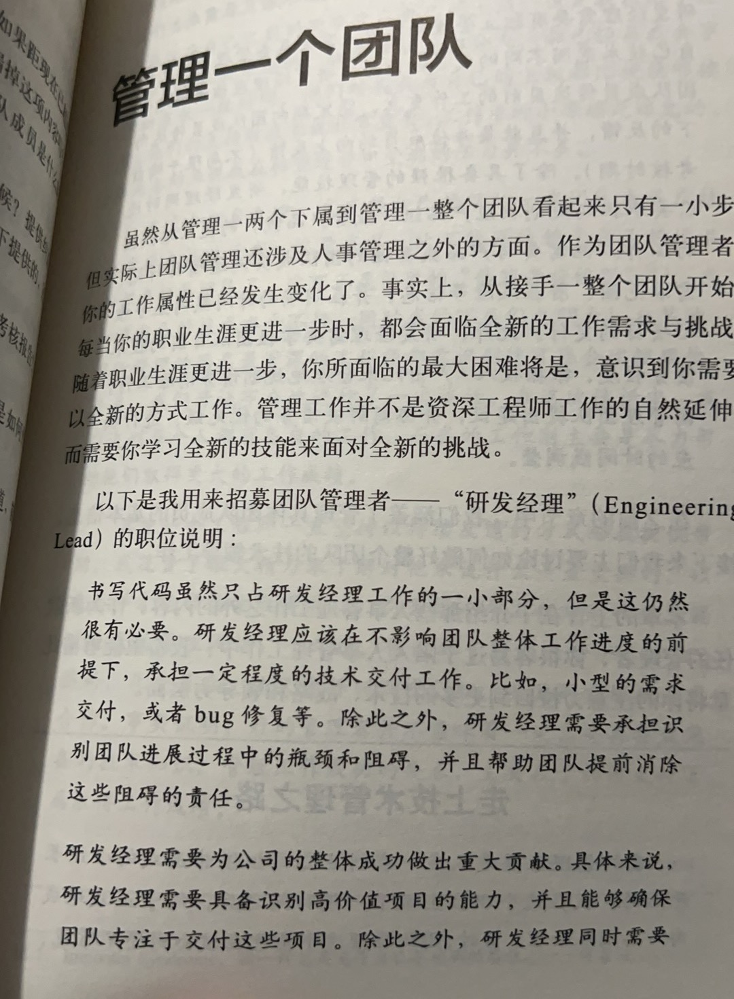

直属经理的义务
下属有权利要求自己的直属经理做到以下几点： 1、一对一会议 主要解决两个问题： 第一，帮助你与直属经理建立起良好的人际关系。 第二，讨论任何你想讨论的话题。 2、工作反馈与指导 给自己的工作提供及时的反馈意见。 理想情况下，一个管理者应该公开的给予正面的反馈，而私下里和你讨论负面反馈。 直属经理应该是你在日常工作中的头号同盟。 技术管理者持续找到一些有新意的前沿项目，让团队来技术帮助团队成长、学习新技能是很重要的工作。 3、职业培训与职业规划
如何做好非管理岗位的工作
1、思考自己的需求是什么 无论是初入职场还是已经有了二十几年的工作经验，搞清楚自己想要做什么，想要学什么，如何从工作中获得快乐，最终都是你自己的责任。 2、自己要对自己负责 无法保证你主动提出要求就一定能成功，但是如果你给自己设定了一个目标，就必须自己想尽一切办法来实现这个目标，不能只是等待 3、体谅你的上级 4、精心选择自己的上级领导
自我评估
- 你可以和自己的直属经理分享自己生活的重要进展吗？你的直属经理是否和你有良好的私人关系？
- 你的直属经理有没有向你提供工作方面的反馈这些反馈有效吗？还是他从来没有向你提供过什么反馈？
- 你的直属经理师傅帮你设定了今年的工作目标。
项目管理
所以，项目管理就是将一个复杂的最终目标分拆成一些小目标，同时将这些目标以最高效的方式进行排序，识别出其中可以并行开展的工作，以及这些工作前后的依赖关系。同时还应该试图找出那些可能导致项目延期或者彻底失败的高风险环节。项目管理的过程，就是试图将不确定的部分更确定，将不可知的问题变成可知问题的过程。同时，我们也应该认识到在这个过程中犯错误和漏掉一些未知风险是不可避免的，可以参考一下几点：
- 1、将工作进行拆分
- 2、持续关注细节与未知部分
- 3、真正落实项目计划并时刻调整
- 4、利用计划过程中获得的知识来管理需求变更。
- 5、随着项目推进不断完善细节信息。
识别员工潜力
个人的真正潜力不会隐藏太久，通过工作努力超额完成任务，面对问题时能提出极具洞察力的建议，又或者在团队之前忽视的地方提供帮助。总之个人的潜力是不会被埋没的，具备真正潜力的人，哪怕他们的工作进度比较缓慢，也是能够在团队中脱颖而出的。
有挑战性的场景：辞退表现不佳者
- 你需要对员工理应交付的工作成果，有明确的认知，如果其没有交付这些工作成果，你就应该尽早、尽量明确地让员工明白，他没有达到你的预期。
- 应该尽可能早、尽可能频繁的向员工提供反馈，同时将你提供给他的反馈信息通通记录下来。反馈信息不管是正面的还是负面的，都应该和员工详细讨论，而不是简单的一句话。如果你不停地回避负面反馈，知道事情无法挽回那时再提客观理由什么的，又有什么用呢？
研发经理的职责


- 在这个新角色中，我发现自己管理的一些团队成员在技术资历上远胜于我，这是我第一次不能再依赖于自己的技术知识来领导团队了。。。每个人都有各自的工作，而我的工作则主要是尽力帮助他们（我的下属）取得更大的工作成绩。
- 事实证明，好的管理者并不意味着一定需要具备最完备的技术知识，管理工作成功的要点，主要在于如何支持下属取得工作成绩。
保持对技术的关注
- 虽然团队中有具备设计系统能力的架构师，以及关注实现细节问题的其他资深技术成员，但是作为团队经理，你的职责是监督他们对技术决策负责，确保这些技术决策符合基本的技术要求，以及评估决策与当下团队的情况，与业务整体需求的符合情况。多年以来的技术工作所形成的基础直觉对你做好引导工作会有很大帮助。
- 另外，如果你真的想要赢得技术团队的尊敬的话，必须让他们认可你的技术能力。技术能力不过关的话，你面临的困难会较多，即使你能在一个公司中进入管理层，你未来的职业发展选项也会很窄。在你努力向技术管理方向转变的同时，千万不要忽视自身技术能力的培养。
- 当然了，取舍是难免的，在你技术管理转型的过程中如何保持自己的技术能力，是一件难事一名管理者随之而来的各种职责–参加更多的会议，规划项目进度，应符琐事，等等–都会抢占你写代码的时间。在应对各种各样的问题的同时，如何能够静下心来写代码，不是一件简单的事情。
- 然而，如果在目前这个阶段你就脱离了具体的编码工作，很有可能会导致自己的技术能力过早的退化。向管理类工作逐渐转型，并不意味着你可以完全脱离具体的技术工作。事实上，我在自己公司技术管理类工作的职责说明中特别的强调，初级技术管理者必须承担小型功能或者小型bug 的修复工作。
- 如果你在职业生涯中过早地脱离了技术工作，那么很有可能你的技术能力会成为你超越中层管理工作的重要障碍。
找出不和谐团队的问题
无法交付
- 平衡什么时候该对团队施加压力与什么时候该释放团队的压力。
- 团队所使用的工具与其所涉及的流程陈旧过时，阻碍了工作的进行。
人际关系
- 工作能力强，产出高，但缺乏团队精神，让周围每个人都很不开心的人，称为“聪明的混蛋”。还有一些滋生事端、心怀不满、沉迷于风言风语并拉帮结派的人。（这两种人要对其谈话，或转出至其他组）
- 不要将那些大声表示对你不满的人留在团队里太久，不管你的管理经验有多丰富，都会被这样的人拖累。有时候最好的防御方式就是主动出击，快刀斩乱麻。
超负荷工作带来的不满
- 一般来说，员工因超负荷工作所产生的不满情绪，都源自一种你可以直接解决的根源问题。
- 在加班的过程中，尽量增加一些工作的趣味性，有的时候一次紧张的工作，反而是团队增进感情的好机会，团队会记住你是和他们患难与共，还是躲在一边做自己的事情。
- 压力有的时候是难免的，但是不能无缘无故的、经常的、持续性的加班。
合作困难
- 你仅仅表示出愿意改善合作问题的态度，就能起到很大作用。
- 要注意的是，为了避免状况变得更糟，不管你是否同意团队成员的意见，都应该在公开场合支持他们的立场。
- 如果团队内部有合作不顺畅的情况，那么你应该尝试给团队成员寻找并创造一些工作之外的相处机会，比如说，和团队成员一起外出吃午餐，周五下午大家一起离开公司去参加一些有趣的活动，在组内聊天时鼓励大家多一些幽默以及和团队成员多唠一些家常，等等，都是有效培养团队凝聚力的好办法。我理解你可能对这种类型的情感培养方式有点发怵，但是哪怕是最内向的人，也渴望和自己的团队成员产生认同感。
如何管理前同事
- 诚实和透明的心态去沟通
- 记住你的工作职责会有较大幅度的改变。作为他的经理，你虽然有否决他的决策的权利，但是一定不要轻易使用这种权利，用你的管理权来否决他的技术决策通常是没有好结果的，一定要克制住自己为管理的冲动，尤其是面对你的前同事时。
- 管理线上的每次上升都意味着你要承担一些新的职责，同时放弃一些原有的职责。你可以趁此机会将自己之前掌控的一些技术工作公开地交给前同事们，赋予他们一定的新决策。同时，这也给团队内初级成员提供了一个学习和提升的好机会。虽然很多技术公司的一线经理会持续提交一些代码，但是这些代码应该是小的功能实现，以及小的 bug 修复和改进，而不应该是设计和实现大型系统。
- 伴随着这些方面的改变，你的目标应该是，向团队展示自己的职责是为了帮助他们成功。以向管理层新角色的转变，并不是团队中抢走了一些职责，而是将你的一份工作交接给团队成员，从而承担起了一些事前被忽视，或者属于团队外其他人的职责。
- 如果你和前同事们意见相左，或者有一些可以被视为权力争夺的行为，他们的确会有一段高度敏感期，甚至会想办法阻碍你的工作开展，所以你一定要谨慎对待前同事们。从长远来看，以成熟的态度处理这种情况往往会取得更好的结果。
成为团队的保护伞
项目管理的秘诀
- 对大部分团队来讲，长期的、抽象的目标，以及短期的、具体的、面向长期抽象目标的工作计划是并存的。。。。作为管理者，你需要对更大范围的项目目标——那些需要数月而不是数个星期才能完成的事情负起责任来。
- 每个季度的有效研发时间只有10周
- 预留20%的工程时间来处理研发可持续性工作。研发可持续性工作指的是添加测试用例、调试问题、重构老旧代码、更换编程语言和升级语言版本，以及其他类似的工程杂事等。每个季度做一点就够，随时清理陈旧系统可以降低其维护难度，从而给团队留出更多的时间来进行新功能的开发。
- 临近交付时间时，管理者有说“不”的义务
- 利用“翻倍定律”来快速测算完成任务所需的时间，同时对研发周期长的任务申请更多的计划时间。 当需要测算软件开发时间时，永远将你预期的时间翻一倍。 在技术团队全力以赴开发一个复杂需求之前，你应该多花一点时间理解需求，进行完善的项目计划
- 不要每个需求都让技术团队来预估实现时间 工程师对每个需求都交付一个预估时间，不仅浪费时间，而且徒增其压力。管理层承担不确定性是责无旁贷的，管理者不应该将不确定性统统甩给团队成员来承担。
同时管理多个团队
技术总监职责的定义
-
技术总监的职责是，承担某一个重要技术领域中所有团队的管理工作。技术总监一般需要同时管理数个跨业务部门、承担不同技术职责的技术团队。技术总监的直接下属，同时包括技术小组长和独立工程师
-
技术总监的工作职责一般不包括日常编码。然而，技术总监需要通过招聘和内部培训的手段来保证团队具有持续、高效的交付业务需求的能力。技术总监应该具有很强的技术背景，同时也需要花一定的时间来了解业界技术的发展方向，预研新技术。技术总监需要对关键系统的正常运转负责，在出现问题时需要参与排错和故障排查工作。这意味着技术总监必须对业务系统足够熟悉，这样才能在需要的时候承担评审代码、故障排查的工作。技术总监应该参与技术系统的架构和设计工作，可以从产品和业务的视角出发，使用合适的技术语言与技术团队成员进行沟通，确保其设计的系统能完全满足当前的业务需求和未来可能出现的扩展需求。
-
技术总监的工作重心是保障复杂业务需求的持续顺利交付。为了达到这个目标，技术总监应该注重对内部开发流程与基础设施的持续评估和持续优化，以便团队能够持续高效的交付业务需求。
-
技术总监，应该能够从多个侧面来影响基础团队成员。技术总监更需要负责在技术团队中构建和培养下一代管理者，帮助那些潜在的管理者学习如何去平衡自己的技术能力与人事管理能力。
-
技术总监应该成为公司跨部门和跨领域沟通协作的带头人。
-
正因为技术总监具有技术和业务的双重背景，所以他应该帮助麾下的团队完善目标设定流程，帮助各个团队制定一个兼顾公司业务方向、技术能力发展，以及人事组织质量等要点的团队目标。
-
技术总监的工作并不包括日常编码工作。这是因为，一个管理者在带领多个团队时，再进行日常编码，基本几乎是不可能的。对技术总监来说，其工作日程已经完全从“构造者”转化为“管理者”了。在一对一会议、与其他技术负责人的沟通会议、团队计划安排会议、与业务团队或公司其他部门的沟通会议之外，技术总监应该基本没有其他空余时间了。如果不能做到每周保留固定编码时间的话，不管多小的业务需求，技术总监做起来都会非常缓慢。
-
万幸的是，亲自上手大量的编码工作并不是技术总监保持技术能力的唯一途径。参与代码评审也是一个不错的选择，就算不是主要评审者，作为第二评审者也是一个不错的选择。
-
就算你作为技术总监并不想写太多代码，我还是要强烈建议你，每周至少留出半天时间给自己，利用这段时间来进行一些创造性的工作，例如，可以考虑为公司的技术blog写一篇文章，进行一场技术宣讲，或者参加某个开源软件开发，等等。应该在大量的管理类型工作之外，保留一些时间来参与一些创造性的工作。
时间管理
- 时间管理最终归结为一个问题：区分一件事情的紧急性与重要性。
- 时间管理的一大挑战，就是如何对待重要性有点模糊的工作。
- 相当于重要性来说，紧急性是相对容易评判的。
- 电子邮件可能是所有传递媒介中，最不适合传递紧急的、需要及时处理的信息的媒介。大部分邮件所涉事项往往只是感觉上很紧急，但并不是真正紧急的事务。这就是很多时间管理方法论都鼓励人们每天固定在特定的时间内才读取和回复电子邮件的原因。
- 一个经典的重要但是不紧急的事务的例子如下：提前准备接下来的一个会议，以便更好地引导会议讨论过程。管理者应该利用合理的方法来保障与会者提前做好准备，例如要求在每次会议开始前发布一个讨论计划。又如，每个需要多人参加的周期性会议，无论是项目计划会议、复盘会议，还是事故分析会议，都应该为一个明确的讨论流程和讨论目标。
- 做一个领导多个团队的管理者，你必须主动平衡思考的深度和广度，不仅需要理解团队的内部细节，还需要知道团队未来的方向，以及为达到未来的目标，需要做什么。
管理转型过程中最短也最难的一课
管理者的职责就是要了解实际情况，并且知道如何帮助团队提高效率。